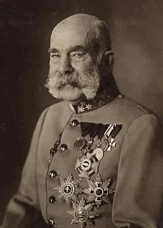
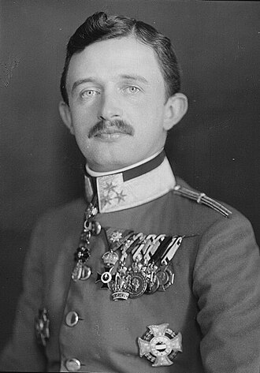
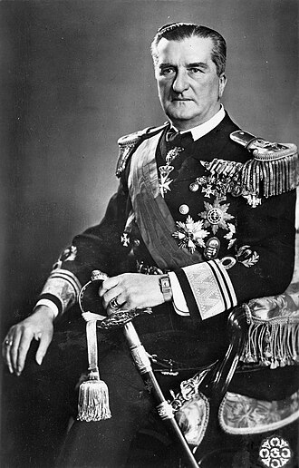

Home
Ungheria
Regno d'Ungheria (fino al 1946)
Regno d'Ungheria (fino al 1946)
Seleziona il sovrano

Francesco Giuseppe I

Carlo IV

Miklós Horthy (Reggente)
Home
Ungheria
Regno d'Ungheria (fino al 1946)